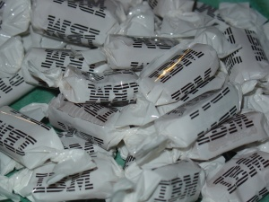

Home Page
F.A.Qs
Statistical Charts
Past Contests
Scheduled Contests
Award Contest
| Online Judge | Problem Set | Authors | Online Contests | User | ||||||
|---|---|---|---|---|---|---|---|---|---|---|
| Web Board Home Page F.A.Qs Statistical Charts | Current Contest Past Contests Scheduled Contests Award Contest | |||||||||
|
Language: Unequalled Consumption
Description The Association of Candy Makers is preparing to launch a new product. Its idea is old with a novel twist: it simply sells boxes of candies. But since people are what they consume and everyone wants to be unique these days, the ACM wants every candy box to be unique, in the sense that no two boxes should contain the same composition of candy types.
The ACM is only able to make a small number n of different types of candy, but while limited in imagination, it is virtually limitless in resources, so it is able to produce as many as it wants of each type of candy. Furthermore, the candy types have different weights (though some may weigh the same), and in order to simplify pricing matters, the ACM wants all candy boxes to have the same total weight. With these restrictions, the ACM will only be able to make a limited number of boxes. For instance, if there are three types of candy, weighing 5, 5 and 10 grams respectively, 4 different boxes can be made with total weight 10 grams (using either two of type 1, or two of type 2, or one of type 3, or one each of types 1 and 2). The ACM would like to be able to make at least one box for everyone in the cosmos. So, given queries in the form of the number of people P in the cosmos, your job is to find the smallest possible total weight w such that P different boxes containing exactly w grams of candies can be made. Input The input consists of several data sets (at most 20). Each data set consists of four lines. The first line contains an integer 1 ≤ n ≤ 5, the number of candy types. The next line contains n integers w1, ..., wn, where 1 ≤ wi ≤ 10 is the weight (in grams) of the i:th candy type. The third line contains an integer 1 ≤ q ≤ 10, the number of queries. The last line of a data set contains q integers P1, ..., Pq, where 1 ≤ Pj ≤ 1015 is the j:th query. Input is terminated by an incomplete data set where n = 0, which should not be processed. Output For the i:th data set, write a line "Set i", followed by q lines giving, for each query Pj, the minimal possible positive weight Wj (in grams) of a candy box. If there is no weight Wj such that at least Pj candy boxes can be made, print "no candy for you" for that query. You may assume that Wj, if it exists, will be at most 100 · Pj. Sample Input 3 5 5 10 1 4 4 3 1 4 2 2 142 700 1 10 1 100 0 Sample Output Set 1 10 Set 2 23 42 Set 3 no candy for you Source |
[Submit] [Go Back] [Status] [Discuss]
All Rights Reserved 2003-2013 Ying Fuchen,Xu Pengcheng,Xie Di
Any problem, Please Contact Administrator